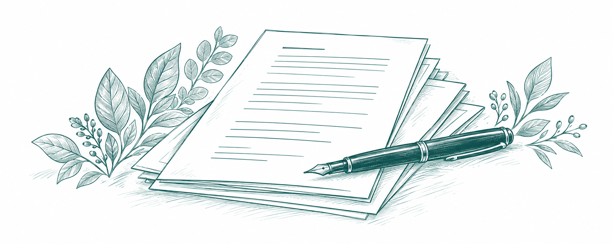

การเรียกร้องค่าสินไหม
จากมูลละเมิด
ทำความเข้าใจประเด็นสำคัญ ก่อนเตรียมเรื่องเรียกร้อง
เข้าใจให้ครบ
ก่อนตัดสินใจในทุกขั้นตอน
เริ่มทำความเข้าใจมูลละเมิด
รวบรวมประเด็นที่ควรศึกษา เมื่อเกิดความเสียหายจากอุบัติเหตุ
เพื่อให้คุณเตรียมข้อมูลและปรึกษาได้อย่างมั่นใจ

ข้อมูลที่ครบถ้วน
ช่วยให้การพูดคุย
เป็นเรื่องง่ายขึ้น
ประเด็นค่าเสียหายที่ควรศึกษา
แต่ละกรณีต้องพิจารณาข้อเท็จจริงและหลักฐาน
เตรียมข้อมูลให้พร้อมก่อนปรึกษา
ข้อมูลที่ครบถ้วน ช่วยให้การพูดคุยกับที่ปรึกษามีประสิทธิภาพมากขึ้น
รายละเอียดเหตุการณ์
วัน เวลา สถานที่ และลักษณะเหตุการณ์
หลักฐานความเสียหาย
ภาพถ่าย เอกสารที่เกี่ยวข้อง และข้อมูลเพิ่มเติม
เอกสารและการติดต่อที่ผ่านมา
เอกสารจากคู่กรณี บริษัทประกัน หรือหน่วยงานที่เกี่ยวข้อง
สำรวจแนวทางดำเนินการ
แนวทางควรพิจารณาจากข้อเท็จจริงในแต่ละสถานการณ์ ควรศึกษาข้อมูลของคุณก่อนตัดสินใจ
รวบรวมข้อมูล
ตรวจสอบข้อมูลและเอกสาร
ที่เกี่ยวข้องให้ครบถ้วน
ตรวจสอบประเด็น
ทบทวนข้อเท็จจริง
และประเด็นสำคัญที่เกี่ยวข้อง
ปรึกษาแนวทาง
พูดคุยกับผู้เชี่ยวชาญ
เพื่อรับคำแนะนำที่เหมาะสม
อ่านต่อในเรื่องที่เกี่ยวข้อง
รวมบทความที่อาจช่วยให้คุณเข้าใจประเด็นต่างๆ ได้มากขึ้น
คำถามที่พบบ่อย
รวมคำถามที่หลายคนสงสัย เกี่ยวกับการเรียกร้องค่าสินไหมจากมูลละเมิด
มูลละเมิดคืออะไร?
ประเด็นนี้ควรปรึกษาผู้เชี่ยวชาญโดยพิจารณาข้อเท็จจริงและเอกสารของแต่ละกรณี
ต้องเตรียมเอกสารอะไรบ้าง?
เตรียมรายละเอียดเหตุการณ์ หลักฐานความเสียหาย และเอกสารการติดต่อที่ผ่านมา
ควรติดต่อใครเพื่อปรึกษาเรื่องการเรียกร้องค่าสินไหม?
ติดต่อบริษัทประกันภัยหรือผู้เชี่ยวชาญที่เกี่ยวข้อง พร้อมข้อมูลของคุณ

ไม่แน่ใจว่าจะเริ่มตรงไหน?
บอกเล่าความต้องการของคุณ
เราช่วยแนะนำแนวทางที่เหมาะสม ให้คุณตัดสินใจได้อย่างมั่นใจ
เรื่องประกันรถ
ให้เราดูแล
ขับไปได้ไกลกว่า
ถ้ามีคนช่วยคัดให้
ให้เราช่วยคัดตัวเลือกให้คุณ
เปรียบเทียบง่าย ได้แผนที่ใช่ พร้อมคำแนะนำจากที่ปรึกษา